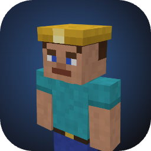

Рисование: по 2D-развёртке или прямо по 3D-модели. Вращение — тянуть по фону или инструмент «Рука»; зум — колесо или щипок.
Клавиши: B карандаш, E ластик, G заливка, I пипетка, L линия, D/U темнее/светлее, N шум, M зеркало, Tab слой, Ctrl+Z / Ctrl+Y.
Слой 2 — шапка, куртка, рукава и штанины поверх основного слоя.
Поставить скин: minecraft.net → Профиль → Скин; в TLauncher — Профиль → Сменить скин.
Черновик сохраняется в браузере автоматически.